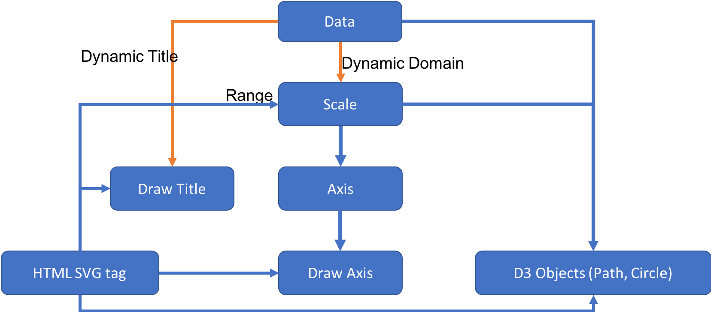

Organization
A D3 SVG chart composes several components, including a HTML svg tag, axis objects, labels, and svg objects (line, circles and paths)

All of these objects are only instantiated/created once, and then update as the data change. Data may change because of filtering or real-time data.
HTML structure
svg/g/axis1
svg/g/axis2
svg/g/path
svg/g/circle
circle
circle
circle
...
svg/g/label
Instantiate/Update
-
Scale
// create scale let scale = d3.scaleLinear(); // set/update domain (according to data) scale.domain([ , ]); // set/update range (according to HTML SVG) scale.range([ , ]); -
Axis
// Bind a scale to the axis, and format axis. // **** Axis is automatically updated when the scale changing because of the binding. let axis =d3.axisTop(scale) .ticks(8) .tickFormat(d3.format('.0%')); -
Draw Axis on HTML
// Initialize once on the SVG let htmlAxis = svg.append('g') .attr('transform', `translate(${padding.l},${padding.t - 10})`); // draw and re-draw htmlAxis.call(axis); -
Draw Path Objects (Chart represented by a path)
// Initialize once on the SVG, bind data let pathG = svg.append('g') .attr('transform', translate); let path1 = pathG.append('path') .datum(data) // data is an array .attr('class', 'line-plot') .attr('fill', 'none') .attr('stroke', color) .attr('stroke-width', '2px'); let fun = d3.line() .x((d)=>{ return xScale(d.x);}) .y((d)=>{ return yScale(d.y);}) .curve(d3.curveBasis); //optional curve // draw and re-draw, (data and scale are update automatically) path1.attr('d', fun); - Draw Other Objects (e.g. Scatterplot -- a lot of circles)
// create a group, transform let scatterplotG = svg.append('g').attr('class', 'scatter-plot'); // rebind the updated data to chart for each redrawing let scatterPlot = scatterplotG.selectAll('.point') .data(data, (d)=>(d.time)); // bind data with k // for new let sp_enter = scatterPlot.enter() .append('circle') .attr('class', 'point') .attr('fill', 'green') .attr('r', 3) .attr('cx', d=>{return xScale(d.time)}) .attr('cy', d=>{return yScale(d.value)}) // for update existed all sp_enter.merge(scatterPlot).transition() .attr('cx', d=>{return xScale(d.time)}) .attr('cy', d=>{return yScale(d.value)}) // for removed scatterPlot.exit().remove();